Bir güzergaha, platformundaki noktalara referanslı bir dizi çizgi atayarak, planda çizim yapmak veya GÖRÜŞ MESAFESİ ya da VIRTUAL 3D'de sürekli şeritler, kesikli şeritler, otokorkuluklar, tırabzanlar vb. gibi elemanları görselleştirmek için kullanılır. Ayrıca, maksimum eğimi, yönünü bir vektörle işaretleyerek ve mutlak değerini etiketleyerek planda çizmeyi sağlar.
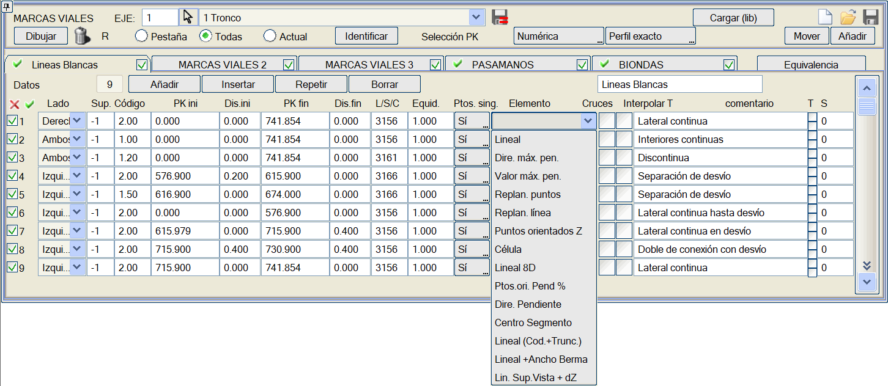
Program, yol çizgilerini beş farklı listede düzenlemeye olanak tanır ve her listeye farklı bir ad atanabilir. Yol çizgilerini tek tek veya sekmeye göre etkinleştirmek ve devre dışı bırakmak mümkündür. Her bir yol çizgisi listesi için aşağıdaki veriler tanımlanır:
- Taraf: Sağ, sol veya her iki taraf.
- Yüzey: Bu kutucuk ile kodu aramak için yüzey tanımlanabilir. Varsayılan değer -1'dir. Kod <= 100 için 67 üzerinde ve kod > 100 için 68 üzerinde arama yapacak şekilde çalışır. Yüzey tanımlanması durumunda, elde edilen kot, sıfırdan farklı bir mesafe verilse bile kodun kotudur.
- Kod: Referans noktasının kodu; enkesitin herhangi bir kodu kullanılabilir (1: eksen, 2: kaplama kenarı, 11: banket kenarı, vb.).
- Başlangıç KM: Çizginin başlangıç noktasının KM'si. Başlangıç veya bitiş KM'lerini ekrana tıklayarak seçerken (Tıkla modu, sayısal değil), tıklanan noktanın tanımlanan koda olan mesafesi de belirlenir.
- Başlangıç Mesafesi: Başlangıç KM'sindeki referans noktasına olan mesafe.
- Bitiş KM: Çizginin bitiş noktasının KM'si. Başlangıç veya bitiş KM'lerini ekrana tıklayarak seçerken (Tıkla modu, sayısal değil), tıklanan noktanın tanımlanan koda olan mesafesi de belirlenir.
- Bitiş Mesafesi: Bitiş KM'sindeki referans noktasına olan mesafe. Eğer başlangıç ve bitiş mesafeleri farklıysa, mesafe biri ile diğeri arasında doğrusal olarak değişir.
- Çizgi/Sembol/Hücre Tipi: Eğer çizgiyi katı gösterimiyle GÖRÜŞ MESAFESİ menüsünde veya VIRTUAL 3D modülünde de görmek isteniyorsa, aşağıdaki tiplerden birinin kullanılması önerilir (ancak kütüphanede daha fazlası mevcuttur ve kullanıcı başkalarını tanımlayabilir):
Bu menüde, Sanal Gerçeklik'te yüklendiğinde ve ilgili BIM modelleri oluşturulduğunda 3D model olarak oluşturulan sürekli çizgiler, kesikli çizgiler, esnek bariyerler, New Jersey vb. temsil edilebilir. Kütüphanemizde tanımlı olan ve 3D gösterimi tanımlanmış Çizgi Tiplerini kullanırlar. 3D gösterimi olan her çizginin, QAxxx adında bir tamamlayıcı dosyası vardır; burada xxx genellikle çizginin numarasıdır, ancak L401'den L412'ye karşılık gelen QA1'den QA12'ye kadar olanlar istisnadır. Bunlar genel yol çizgileridir (sürekli çizgiler, kesikli çizgiler, ...) ve L413 basit bir borudur.
L1800'den L1809'a kadar renkli şeritler serisi vardır.
Daha sonra, C, D, T, M serilerinin Yol Çizgileri Yönetmeliği'ne, otokorkuluklara, bariyerlere ve tırabzanlara karşılık gelen ve yönetmeliğe göre çizgi ve boşluk boyutlarına sahip seriler bulunmaktadır:
L3151'den L3156'ya ve L3160 C normu
L3161'den L3172'ye D normu
L3191'den L3192'ye T normu
L3193'ten L3200'e M normu
L3250'den L3253'e esnek bariyerler (otokorkuluklar)
L3256'dan L3258'e Beton bariyerler (New Jersey)
L3261'den L3262'ye mavi korkuluk
L3265
boru tırabzan
L3270
eleman bordür
KESİKLİ BOYUNA İŞARETLEMELER (İspanyol yönetmeliği 8.2-IC)
|
Çizgi Tipi
|
Açıklama
|
Şema (boyutlar metre cinsinden)
|
| L3161 | Şeritleri ayırmak.
Otoyollar ve Ekspres Yollar
M-1.1
Çizgi genişliği : 0,15m | 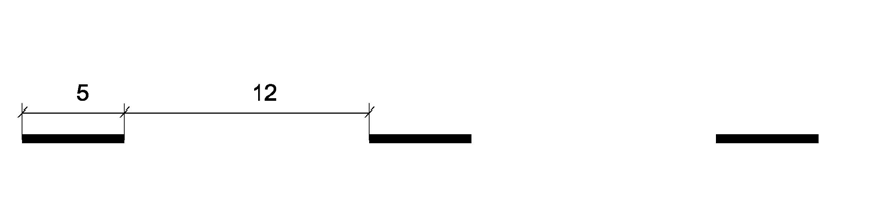 | | L3162 | Şeritleri ayırmak.
Çok şeritli ve konvansiyonel yollar
M-1.2
Çizgi genişliği: 0,15m | 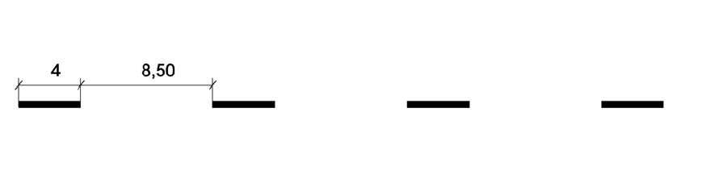 | | L3163 | Şeritleri ayırmak.
Geçişler ve şehir içi yollar.
M-1.3
Çizgi genişliği: 0,10m | 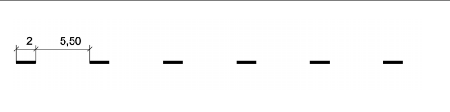 | | L3164 | Dönüşümlü şeritlerin sınırlandırılması.
Otoyollar, ekspres yollar, çok şeritli ve konvansiyonel yollar.
M-1.4
Çizgi genişliği: 0,15m | 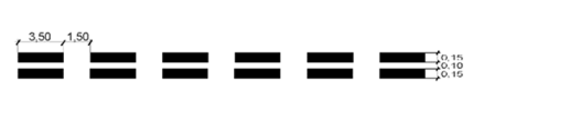 | | L3165 | Dönüşümlü şeritlerin sınırlandırılması.
Geçişler ve şehir içi yollar.
M-1.5
Çizgi genişliği: 0,10m | 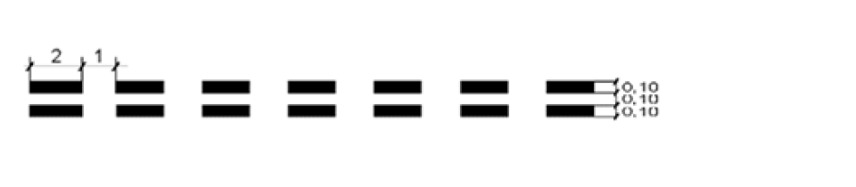 | | L3166 | Hız değiştirme şeritlerinin veya kollarının, birleşme şeritlerinin ve özel şeritlerin ayrılması.
Otoyollar ve Ekspres Yollar.
M-1.6
Çizgi genişliği: 0,40m |  | | L3167 | Hız değiştirme şeritlerinin veya kollarının, birleşme şeritlerinin ve özel şeritlerin ayrılması.
Çok şeritli, konvansiyonel, geçiş ve şehir içi yollar.
M-1.7
Çizgi genişliği: 0,30m | 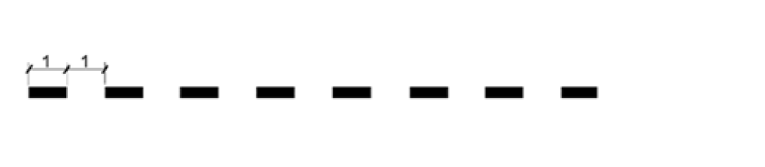 | | L3168 | Ayrılma veya birleşme ön uyarısı.
M-1.8
Çizgi genişliği: 0,50m | 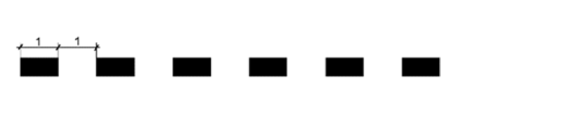 | | L3169 | Yol ekseninde sürekli çizgi veya diğer durumlar için ön uyarı.
Çok şeritli ve konvansiyonel yollar.
M-1.9
Çizgi genişliği: 0,15m | 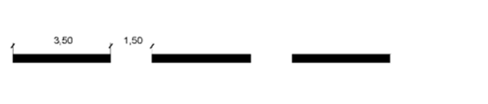 |
| L3170 | Yol ekseninde sürekli çizgi veya diğer durumlar için ön uyarı.
Geçişler ve şehir içi yollar.
M-1.10
Çizgi genişliği: 0,10m | 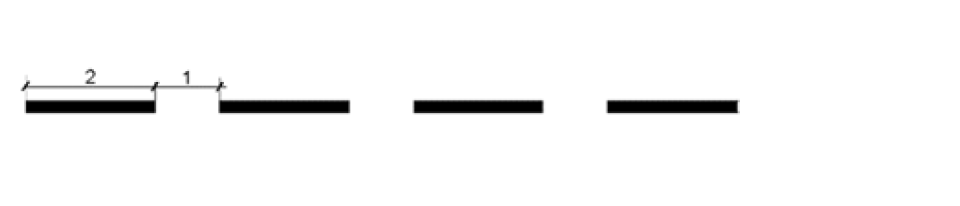 | | L3171 | Taşıt yolu kenarlarının sınırlandırılması.
Geçişler
M-1.11
Çizgi genişliği: 0,15m | 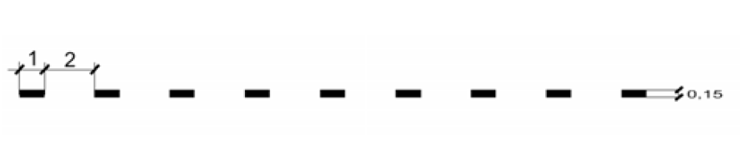 | | L3172 | Sürekli çizginin kesintiye uğraması ve kavşakta kılavuz.
M-1.12
Çizgi genişliği: Değişken, varsayılan 0,15m | 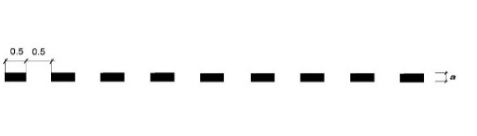 | | L3173 | Yol ekseninin belirtilmesi.
Konvansiyonel yollar.
M-1.13
Çizgi genişliği: 0,15m | 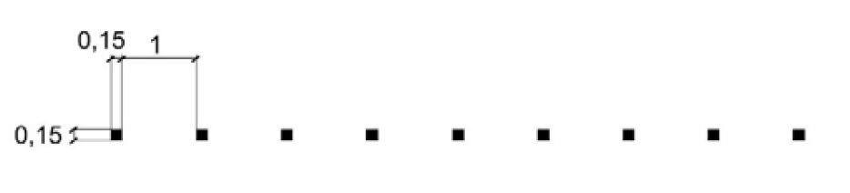 | | L3183 | Sürekli çizginin kesintiye uğraması ve kavşakta kılavuz.
M-1.12_0.1
Çizgi genişliği: 0,1m | | | L3184 | Sürekli çizginin kesintiye uğraması ve kavşakta kılavuz.
M-1.12_0.2
Çizgi genişliği: 0,2m | | | L3185 | Sürekli çizginin kesintiye uğraması ve kavşakta kılavuz.
M-1.12_0.3
Çizgi genişliği: 0,3m | | | L3186 | Sürekli çizginin kesintiye uğraması ve kavşakta kılavuz.
M-1.12_0.4
Çizgi genişliği: 0,4m | | | L3187 | Sürekli çizginin kesintiye uğraması ve kavşakta kılavuz.
M-1.12_0.5
Çizgi genişliği: 0,5m | |
SÜREKLİ BOYUNA İŞARETLEMELER (İspanyol yönetmeliği 8.2-IC)
|
Çizgi Tipi
|
Açıklama
|
Şema (boyutlar metre cinsinden)
|
| L3151 | Şeritleri ayırmak.
Otoyollar, ekspres yollar, çok şeritli ve konvansiyonel yollar.
M-2.1
Çizgi genişliği : 0,15m | 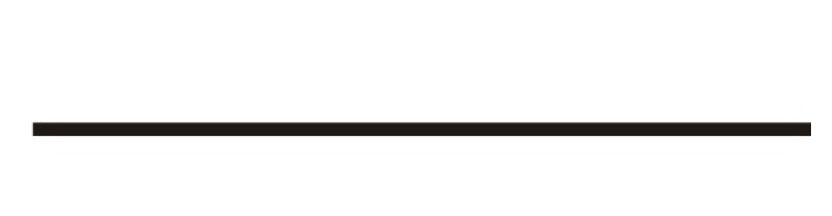
| | L3152 | Şeritleri ayırmak.
Geçişler ve şehir içi yollar.
M-2.2
Çizgi genişliği: 0,10m | 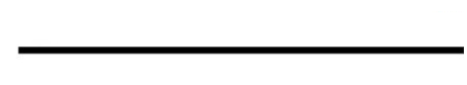
| | L3153 | 3 veya daha fazla şeritli tek platformlu yollarda ve tünellerde yönlerin ayrılması.
Çok şeritli ve konvansiyonel yollar.
M-2.3a
Çizgi genişliği: 0,15m | 
| | L3157 | 3 veya daha fazla şeritli tek platformlu yollarda ve tünellerde yönlerin ayrılması.
Geçişler ve şehir içi yollar.
M-2.3b
Çizgi genişliği: 0,10m | 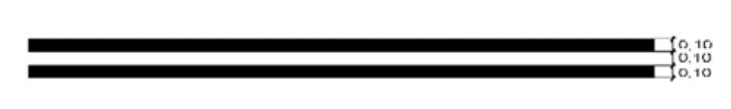
| | L3154 | Hız değiştirme şeritlerinin veya kollarının, birleşme şeritlerinin ve özel şeritlerin ayrılması.
Otoyollar ve Ekspres Yollar.
M-2.4a
Çizgi genişliği: 0,40m |
| | L3155 | Hız değiştirme şeritlerinin veya kollarının, birleşme şeritlerinin ve özel şeritlerin ayrılması.
Çok şeritli, konvansiyonel, geçiş ve şehir içi yollar.
M-2.4b
Çizgi genişliği: 0,30m | 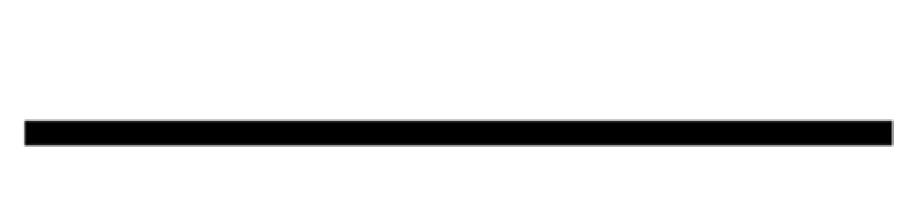
| | L3156 | Taşıt yolu kenarlarının sınırlandırılması.
Otoyollar ve ekspres yollar.
M-2.5
Çizgi genişliği: 0,20m | 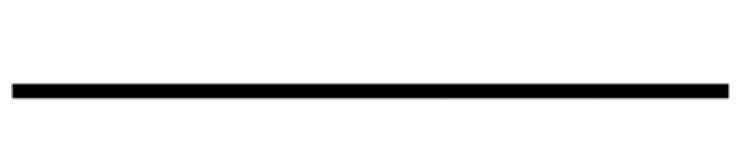
| | L3159 | Taşıt yolu kenarlarının sınırlandırılması.
Çok şeritli ve konvansiyonel yollar.
M-2.6
Çizgi genişliği: 0,15m |
| | L3160 | Taşıt yolu kenarlarının sınırlandırılması.
Şehir İçi Yollar.
M-2.7
Çizgi genişliği: 0,10m |
|
| L3158 | Ayrılma ve birleşme noktalarında platformların ayrılması.
M-2.8
Çizgi genişliği: 0,50m |
|
KESİKLİ ÇİZGİLERE BİTİŞİK SÜREKLİ BOYUNA İŞARETLEMELER (İspanyol yönetmeliği 8.2-IC)
|
Çizgi Tipi
|
Açıklama
|
Şema (boyutlar metre cinsinden)
|
L3161 +
L3151
(*) | Aynı yöndeki şeritlerin ayrılması ve şerit değiştirmenin düzenlenmesi.
Otoyollar ve Ekspres Yollar
M-3.1
Çizgi genişliği : 0,15m
Sürekli / Kesikli ayrımı : 0,10m | 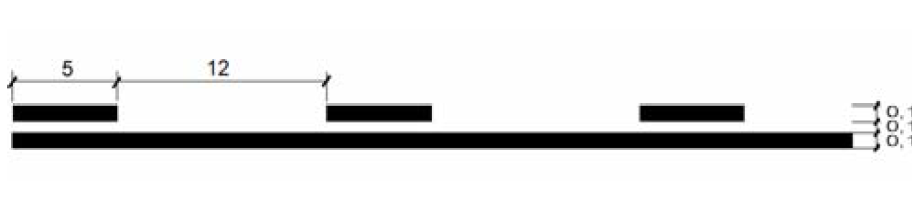
| L3162 +
L3151
(*) | Trafik yönlerinin ayrılması ve bitişik şeritteki araçları sollamanın yasaklanması / şerit değiştirmenin düzenlenmesi.
Çok şeritli ve konvansiyonel yollar.
M-3.2
Çizgi genişliği: 0,15m
Sürekli / Kesikli ayrımı : 0,10m | 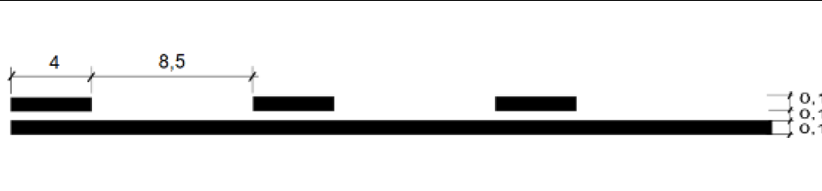
| L3163 +
L3152
(*) | Trafik yönlerinin ayrılması ve bitişik şeritteki araçları sollamanın yasaklanması / şerit değiştirmenin düzenlenmesi.
Geçişler ve Şehir İçi Yollar.
M-3.3
Çizgi genişliği: 0,10m
Sürekli / Kesikli ayrımı : 0,10m | 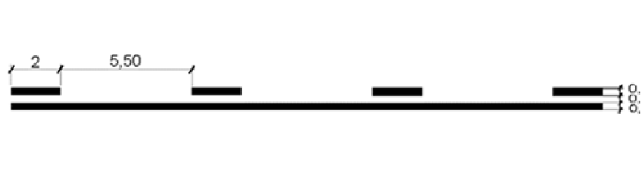
| | *
Bu birleşik boyuna işaretlemelerin (sürekli / kesikli) çizimi, istenen KM'ler arasına yerleştirilerek ve ilk sütunda belirtilen çizgi tipi ayrı ayrı çizilerek, taşıt yolunun simetri ekseni referans alınarak ve çizginin yönetmelikte belirtilen kotlara karşılık gelen öteleme kullanılarak manuel olarak yapılmalıdır.
ÖRNEK:
L3161 + L3151
L3161, KM 0.000 ile KM 5.150 arasında -0,05m öteleme ile
L3151, KM 0.000 ile KM 5.150 arasında +0,05m öteleme ile |
| PARK ALANLARININ SINIRLANDIRILMASI İÇİN İŞARETLEMELER (İspanyol yönetmeliği 8.2-IC) |
Çizgi Tipi
|
Açıklama
|
Şema (boyutlar metre cinsinden)
|
L3197
|
Paralel park için
M-7.3a
Renk: Beyaz
Çizgi genişliği: 0.10 cm
|

|
L3198
|
Düzenlenmiş paralel park için
M-7.3a
Renk : Mavi
Çizgi genişliği: 0.10 cm |
|
DİĞER ELEMANLAR
|
Çizgi Tipi
|
Açıklama
|
L405
|
Tırabzan
|
L406
|
Hat Ekseni
|
L407
|
Korkuluk
|
L408
|
Ray
|
L3250
|
Sonlandırıcı ile sol tekli otokorkuluk |
L3251
|
Sol çiftli otokorkuluk |
L3252
|
Sonlandırıcı ile sağ tekli otokorkuluk |
L3253
|
Sağ çiftli otokorkuluk |
L3256
|
Sol beton bariyer |
L3257
|
Sağ beton bariyer |
L3258
|
Orta refüj beton bariyeri |
L3261
|
Sol viyadük bariyeri |
L3262
|
Sağ viyadük bariyeri |
L3265
|
Korkuluk |
L3270
|
Bordür |
Eğer yol çizgisinde tanımlanan çizgi, direkleri içeren bir BIM gösterimiyle ilişkilendirilmişse (örneğin Otokorkuluklar: L411, L412, L423, L424, L427, L3250, L3251, L3252 ve L3253), başlangıç mesafesi ve direkler arası mesafe ile. O zaman, çizgi oluşturulduğunda, uzunluğunun direkler arası mesafenin bir katı artı başlangıç ve bitişteki boşluklar olacak şekilde başlangıçtan ve sondan uzatılır. L3250 ve L3252 çizgileri, 3D/BIM gösterimlerine bariyerlerin sonlandırmalarını eklemek için bazı hücreleri (C3031 ila C3034) kullanır.
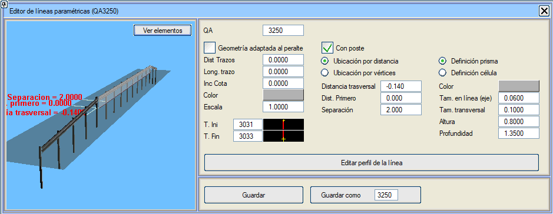
BIM'de, yatay işaretleme tipi nesneler, otomatik olarak şu özniteliği alır: boyanmış yüzey. Bu, bu nesnelerin özelliklerinde gözlemlenebilir.
Direkler:
Direklere, zemin altında bir derinlik tanımlanabilir. Sıfırdan büyük bir değer.
Eğer genişlik (Enine Boyut) veya uzunluk (Hat Boyunca Boyut (eksen)) sıfır ise, diğer boyut silindirik bir direğin çapı olarak kabul edilir.
Direk yerleştirme imkanı:
- çizginin başında parametrik bir öteleme ile düzenli bir mesafede bir direk eklenecektir.
- çizginin her bir some noktasına bir direk koymayı seçebilirsiniz.
Direk tanımı:
- parametrik bir prizma aracılığıyla.
- bir hücreyle ilişkili bir 3D geometri koymak.
Yol Çizgileri menüsünde tanımlanacak parametreler:
- Eşit aralık: Çizilecek çizgi/çizgilerin some noktaları arasındaki maksimum aralık.
- Karakteristik noktalar: Çizgiye genişlik, dever vb. değişikliklere karşılık gelen karakteristik noktaları eklemeyi sağlar.
- Eleman: Eleman tipini aşağıdaki değerler arasından seçmeyi sağlar:
- Lineer: Sürekli şeritler, kesikli şeritler, otokorkuluk,...
- Maksimum eğim yönü: Maksimum eğimin yönünü ve değerine orantılı uzunlukta bir sembol (S152) çizer.
- Maksimum eğim değeri: Maksimum eğimin değerini etiketler (S560). Maksimum eğimin Değer ve Yön tipleri, tanımlandıkları yüzeyin bölgesindeki değeri alır (PK'daki ana taşıt yolunun analitik eğimini ve deverini kullanmak yerine).
- Nokta aplikasyonu: Belirtilen konumlara S43 sembolü ile noktalar yerleştirir.
- Çizgi aplikasyonu: Bu durumda, lineer tip bir elemanda eşit aralık maksimum bir değer olarak alınırken, burada tam eşit aralık değeri kullanılır.
- Yönlendirilmiş noktalar: Nokta aplikasyonu ile aynı seçenek, ancak bu durumda azimut ile yönlendirilirler.
- Hücre: Tanımlanan noktalara, yönü ters çevirme imkanıyla bir hücre eklemeyi sağlar. Hücreler herhangi bir sayıda değişken metne sahip olabilir. Bu metinlere bir değer atamak için yoruma yazılacaktır. Örneğin, üç değişken metinli bir hücre için: metin1#metin2#metin3#yorum.
Hücrelere aktarılan metinlerde aşağıdaki komutlar da kabul edilir:
@PK: Noktanın KM'sini metin olarak aktarır.
@KM: Noktanın kilometresini metin olarak aktarır.
@HM: Noktanın hektometresini metin olarak aktarır.
Örneğin, yorum olarak PK # @PK #... yazılırsa, ilk metin olarak "PK" ve ikinci olarak da KM değeri aktarılacaktır.
- Lineer 8D: Tanımlı bir koddan bir 8D çizgisi çizmeyi sağlar.
- Yönlendirilmiş noktalar ve eğim özniteliği: Seçilen kodun boyuna eğimi (%) noktaya aktarılır. Örneğin, hendek tabanının boyuna eğimini etiketleyecek olan 600 kodundan hendeklerin etiketlenmesi için.
- Eğim yönü: Eğimin yönünü gösterir.
- Segment merkezi: Tanımlanan kod ile bir sonraki nokta arasındaki orta noktaya eklenir. Yönelim, bu noktaya karşılık gelen yöndür; kodların eksene olan mesafesi değişiyorsa azimuttan farklı olabilir.
- Lineer (Kod+Kırpılmış): Bu yeni tip, yol çizgisini istenen koda göre oluşturur, eğer bu kod korunan platform içindeyse ve kod sınır çizgilerinin dışındaysa, o zaman kırpma kenarından gider.
- Lineer + Palye Genişliği: Bu durumda, palye için bir genişlik girmeye izin verir. O zaman bu Yol Çizgisinin KM aralığında ve ilgili tarafta, yarma palyesini veya dolgu palyesini bu genişlikte bir taneyle değiştirir (ve yarma veya dolgu palyesinin eğimini korur).
- Lineer Görünen Yüzey + dZ:
Lineer eleman, 67 yüzeyinin (100 koduna kadar) veya 68'in bir koduna referanslı bir mesafede planda konumlandırılır. Referans kotu, konumuna bağlı olarak alınacaktır; bu 67 yüzeyi, 68 yüzeyi, 69 yüzeyi (Uygun Olmayan Arazide Yarma yüzeyi) veya arazi olabilir. Arazi yüzeyi olarak, genellikle ISPOLn.per'de bırakılandan daha uzağa ulaşan arazi enkesitlerinde (PERFn.per) gelen yüzey alınır. Bu kota bir [dZ] değeri eklenir.
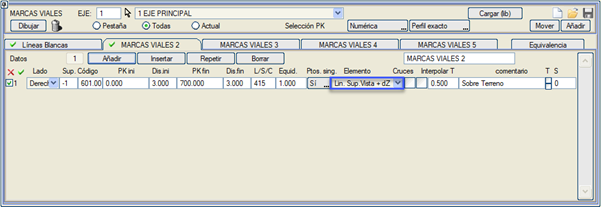
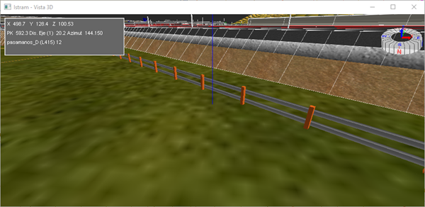
- Kesişimler: Bu kutucuğu etkin olan yol çizgileri, kesişimlerin birleşim yerleri tarafından miras alınır.
Kod 2 veya daha büyük olan yol çizgileri, kesişimlerin birleşim yerlerinden etkilenen bölgelerde otomatik olarak gizlenir, böylece güzergahın başından sonuna kadar tek bir tane tanımlanabilir. Sağ tarafın kod 2 yol çizgisi, birleşim yerlerine aktarılmak üzere etkinleştirilebilir, ancak sol tarafınki aktarılmamalıdır.
Sadece, birleşimin tanımlandığı güzergahın yol çizgileri, kesişimler seçeneği işaretli olanlar ve ayrıca birleşimin bu güzergahtan çıktığı veya geldiği km'nin yol çizgisinin çizildiği kesim içinde olduğu durumlarda birleşim yerlerine aktarılır.
- T Enterpole Et: Bu seçenek etkinleştirildiğinde, yol çizgisinin oluşturulduğu noktalarda enkesitler enterpole edilir. Bu, enkesitler arasındaki eşit aralığın yol çizgilerinin oluşturulma aralığına göre büyük olduğu kurplu bölgelerde görsel bariyerlerle görüş mesafesi etütleri yaparken yararlı olabilir.
- Yorum: Her bir yol çizgisi verisine bir metin ilişkilendirmek mümkündür.
- Sembol: Her bir lineer veya lineer8D tipi yol çizgisine, güzergah hesaplandığında ISPOLN.per enkesitinde temsil etmek için bir sembol ilişkilendirmeyi sağlar.
[Çiz] butonu, tanımlanan çizgileri, sembolleri ve hücreleri harita üzerinde oluşturur. Yol çizgilerinin çizimi, plandaki güzergahın başlangıç ve bitiş KM'lerinde kırpılır. Belirtilene bağlı olarak, çizilecek yol çizgileri şunlar olacaktır:
- Sekme: Aktif sekmenin tüm yol çizgileri.
- Tümü: Oluşturulan tüm grupların (sekmelerin) tüm yol çizgileri.
- Mevcut: Sadece aktif sekmenin ilk satırında görüntülenen veriye karşılık gelen.
Ayrıca PROJE menüsünden, proje hesaplanırken aktif güzergahların tüm yol çizgilerini çizme imkanı sunulur, bu daha kullanışlıdır.
Çizildiklerinde, mevcut yol çizgisi otomatik olarak vurgulanacaktır.
Tanımla butonuyla, çizilen çizgilerden birini seçebiliriz, sekmeye geçer ve onu tanımlandığı mevcut veri olarak ayarlar.
Sınır çizgileri, yol çizgilerini dikkate alır, öyle ki onlar tarafından kırpılan yol çizgilerinin segmentleri gizlenir.
butonu, [Çiz] butonuna tıklandığında oluşturulan son yol çizgisi çizimini silmeyi sağlar. Bu buton ayrıca, işaretli olan Sekme/Tümü/Mevcut seçeneğine de duyarlıdır. Ve her durumda sadece mevcut güzergahın Yol Çizgilerini siler. Tüm güzergahların tümünü silmek isteniyorsa, kaynaklara göre silinebilir.
E butonu aracılığıyla, yol çizgilerinin neyin ve nasıl etiketleneceğini yapılandırabileceğiniz diyalog kutusuna erişilir:
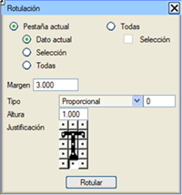Sadece Mevcut Sekme'nin mi yoksa Tümü'nün mü etiketlenmek istendiği ve sadece Mevcut Veri'nin mi, Tüm yol çizgilerinin mi (mevcut sekmenin veya Tüm sekmelerin) veya sadece aktif yol çizgilerinin mi (hem mevcut sekmenin hem de tüm sekmelerin) etiketlenmek istendiği belirtilir.
Ayrıca metnin yol çizgisine göre Boşluğunu, etiket Tipini, Yüksekliğini ve metnin Hizalamasını da yapılandırmak mümkündür.
Etiketlenen, çizgi tipinin adıdır.
Eğer uzunluğu 700m'den az ise yol çizgisinin orta noktasına bir metin oluşturulur, eğer uzunluk 700m'den büyükse her 700m'de bir etiketlenir, 350m'lik bir başlangıç boşluğu bırakılarak, gerekirse son kesime başka bir metin etiketlenir.
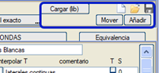Bir güzergahla ilişkili yol çizgileri tanımı, .vol dosyasıyla kaydedilir, ancak ayrıca .mcv uzantılı dosyalarda bağımsız olarak kaydedilebilir ve yüklenebilir.
[Ekle] butonu, mevcut verileri silmeden daha fazla veri yüklemeyi sağlar, çünkü bir .mcv dosyasını sona eklemeyi sağlar. Dosyanın yüklendiği sekmede, o dosyayla ilişkili başlık görünecektir.
[Taşı] kutucuğu aracılığıyla: bir veri kümesini bir sekmeden diğerine taşımayı sağlar.
[Yükle (küt.)] seçeneğiyle, kütüphanelerde bulunan yol çizgisi dosyalarının desenlerini yüklemek mümkündür (program birkaç tane içerir). Bu dosyalarda, yüklendikleri herhangi bir güzergahı tamamen kapsamaları için başlangıç ve bitiş KM'si olarak sırasıyla -9999999 ve 9999999 değerlerinin kullanılması önerilir.
Yol çizgileri, plandaki güzergahınki yerine hesaplama bölgelerinde uygulanan ilk ve son km ile sınırlıdır. (Bu, bir yan yolun ana güzergahla birleşimindeki hesaplama bölgesini kısaltırken kullanışlıdır.). Ayrıca, bir veya her iki tarafın iptal edildiği hesaplama bölgelerine de uyar.
Her bir sekmede, bu diyalog kutusunda beyan ettiğimiz tüm yol çizgilerini ve diğer öğeleri zevkimize göre düzenlemek için adını değiştirebileceğimiz bir metin kutusu vardır.
Eşdeğerlikler
Taşıt yolunun tarafına bağlı olarak farklı olabilen çizgi tipleri arasında, bunlar ters yönde gidilen kesişim ve dönel kavşak birleşim yerleri tarafından miras alındığında, eşdeğerlikler tanımlamayı sağlar. Ayrıca yol çizgisiyle ilişkili enkesit için semboller için de bir eşdeğerlik tanımlanır.
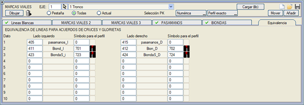
Temsil ettiğimiz yol çizgileri BIM modelinde gösterilecektir.
|